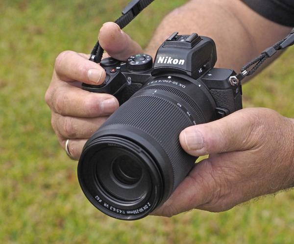
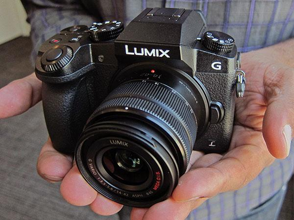
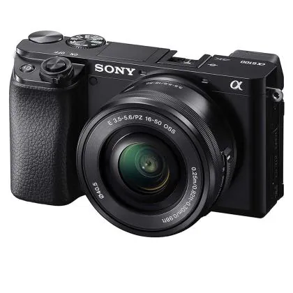
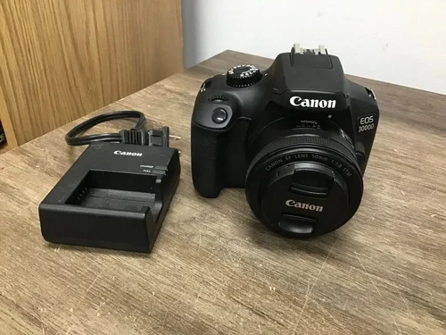
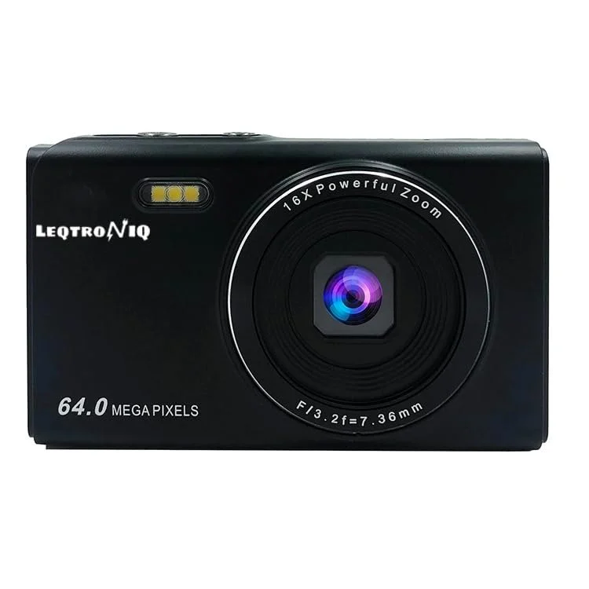

Choosing your first camera can be daunting, but don't worry! We've handpicked the best cameras for beginners that offer excellent quality and value. These cameras will help you learn the fundamentals of photography while producing high-quality images and videos.
Explore our top 5 cameras, carefully selected for beginners who want a reliable, versatile, and affordable camera to start their photography journey.

The Nikon Z50 is a compact mirrorless camera that features a 20.9MP DX-Format sensor and UHD 4K video recording. It’s perfect for both photography and videography, and is designed to give you a pro-level experience without the complexity of high-end cameras.

The Panasonic LUMIX G7 is an amazing mirrorless camera for both beginners and enthusiasts. With its 4K video recording and high-quality photos, it is perfect for creators who are serious about their content.

The Sony Alpha ILCE-6100Y is perfect for beginners who want to get into photography and vlogging. It offers stunning image quality, 4K video, and fast autofocus, all in a compact package.

The Canon EOS 3000D is an excellent entry-level DSLR with a fast 9-point autofocus system. It’s great for those looking to get serious about photography without breaking the bank.

The LEQTRONIQ digital camera offers excellent value for money, with 64MP photos and 4K video. This budget-friendly option is perfect for photography enthusiasts just starting out.